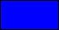
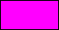
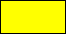

Anexo: Constantes de color
La siguiente es una lista con todas las constantes de color predefinidas en GameMaker: Studio.
| Constante GML | Muestra de color | Valor numérico |
| c_aqua |  | 16776960 |
| c_black |  | 0 |
| c_blue |  | 16711680 |
| c_dkgray |  | 4210752 |
| c_fuchsia |  | 16711935 |
| c_gray | | 8421504 |
| c_green |  | 32768 |
| c_lime |  | 65280 |
| c_ltgray | | 12632256 |
| c_maroon |  | 128 |
| c_navy | | 8388608 |
| c_olive |  | 32896 |
| c_orange |  | 4235519 |
| c_purple | | 8388736 |
| c_red |  | 255 |
| c_silver |  | 12632256 |
| c_teal |  | 8421376 |
| c_white | | 16777215 |
| c_yellow |  | 65535 |
Por ejemplo:
draw_set_colour(c_teal);
draw_rectangle(32, 32, 128, 128, false);
El anterior ejemplo dibujará un rectángulo de color c_teal.